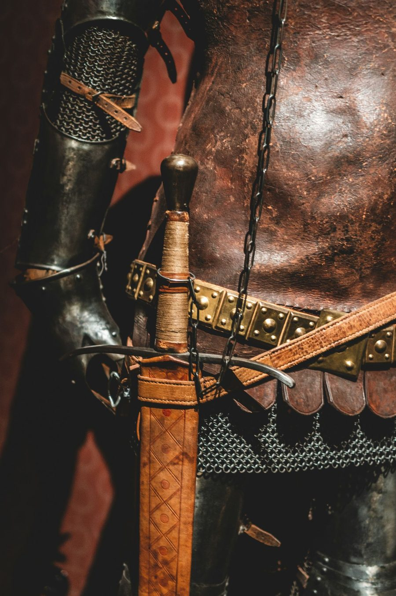
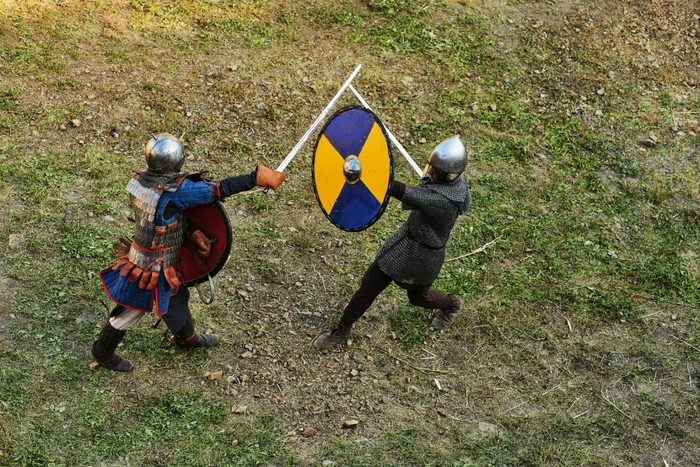
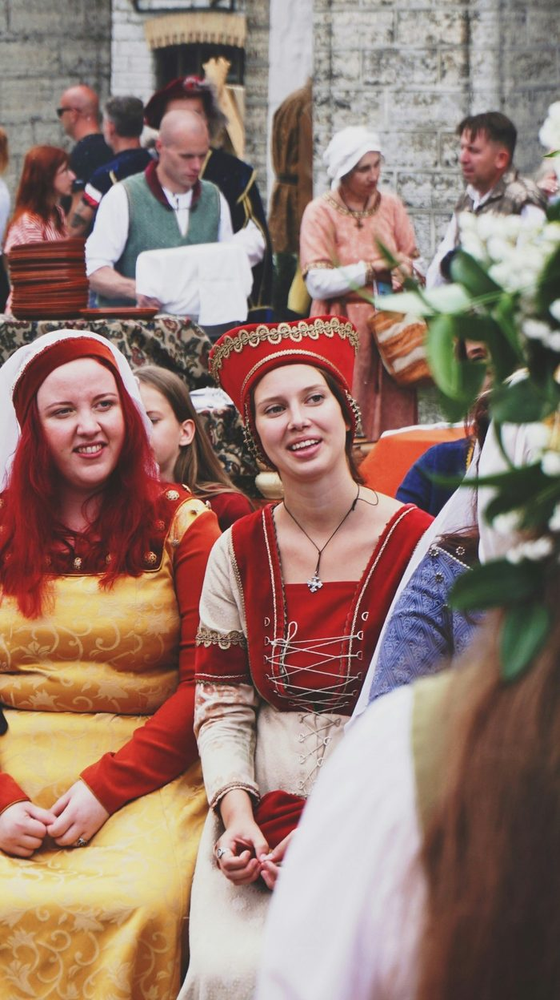
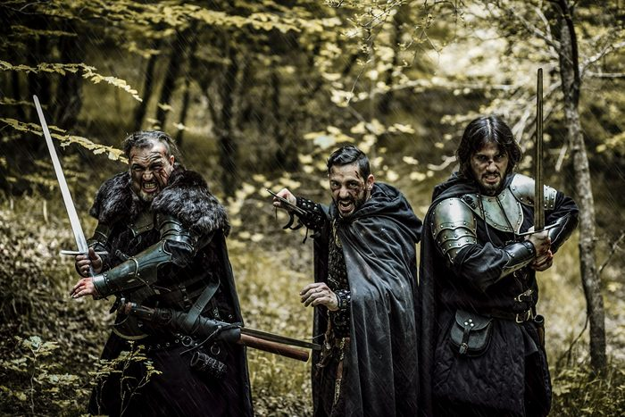
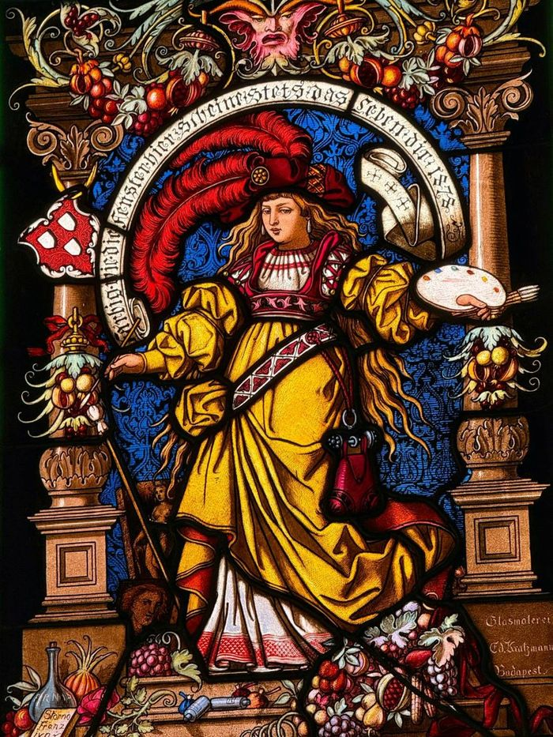
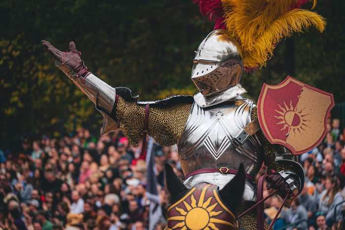

Fantasy Alive appreciates the hard work and contributions that help to make our games fun, safe, and welcoming to our players, both new and familiar. People who help through contributions of costume and props, or through work done to help the game to function, are usually recognized with Ogre Chips, tokens that can be exchanged for experience or gold in-game.
Although an exhaustive list of the ways that you can help Fantasy Alive to run smoothly would be impossible, the following are a few of the more common ways that people work to make a difference. If you have some skill, materials, or knowledge that you think would help the game to thrive and grow that doesn't seem to be listed below, feel free to reach out to the game's owners to see if that might be helpful in running the game.
"Casting" is the catch-all term for playing non-player characters at Fantasy Alive. Cast members take on the role of monsters, villagers, merchants and others, not represented by a player character. In general, cast are asked to wear black clothing without any writing on it if possible, and will be provided costume pieces to wear over this from the costume and prop reserves that the game possesses. Some roles may also involve masks or makeup, but while combat is often a part of casting, people who cannot safely perform combat roles may still cast – although they may not be able to participate in every mod.

It is advised that people who wish to spend time acting as a plot marshal spend some time casting before they do so. This helps them to be more familiar with how the game works behind the scenes, to understand the expectations that are a part of that role.

Cast Shift is the lowest impact way of playing a cast role. This is an option for players who want to take a break from playing their characters, of who want to help out, in exchange for some ogre chips. Cast shift is available to most players during the course of their game, when they will temporarily set aside their player character and come to represent non-player characters for a while. In some instances, plot or owners will ask if anyone is willing to join cast for a 'mod' (self-contained adventure or part of an adventure), often when more numbers are needed.
Some ogre chips are awarded for this, usually proportionate to the amount of time spent casting. Cast shift is not mandatory at Fantasy Alive.

Event Cast are playing a cast role for an entire event. Event cast are encouraged (but not required) to stay for the majority of the event, and will take on a number of non-player character roles in that span. In addition to being awarded Ogre Chips, the event fee for those who are casting for the entire event is waived, although being on meal plan will still have a (discounted) cost. Casting for an event can be a good way to practice skills such as combat and spellcasting, and to otherwise familiarize oneself with parts of the game that they might not encounter as a player character.

Permacast are players who are taking on a cast role for a protracted period, often an entire season. Permacast receive Ogre Chips and, like event cast, have their event fees waived and a discount applied if they wish to be on meal plan. Permacasting is a great way to practice LARP skills and to thoroughly learn the rules of play, and permacast who have shown that they are capable in roles that they have been assigned may be given roles that are more complex, or which are recurring characters for the span of their time on cast.
Technically a marshal role, Plot Marshals (or simply Plot) are those players in the game who have taken on the responsibility of creating characters, planning, and presenting stories for the game of Fantasy Alive. Plot is responsible for creating both individual events, and multi-event storylines, which players can investigate, explore, and interact with, using the rules in the rulebook. In addition to work done at events, the plot team will hold a 'plot meeting' between events, where they coordinate the plans for an event or storyline, and will also answer questions or address some between-game in-character concerns via email.

At event, plot members will give description for scenes (particularly when an area like a cave or building cannot be directly represented). They will make on-the-spot calls for how the rules interact with their story (called a 'field call'), informed by their familiarity with the rules, although they may defer this responsibility to rules marshals. Although plot team members may generally be expected to be familiar with all active storylines, they may defer to the plot member who came up with or is leading that story, in order to ensure that the story is consistent. Plot members at events will also effectively act as cast members – taking on serious roles to ensure that they are played in accordance with the story and rules of the game.
Usually, the role of plot lasts for a year (or 'season'), with some exceptions. In general, in addition to being expected to attend all or most of the events in a given season, plot marshals will have 7-10 hours of work, preparing characters, writing up notes for the event, and preparing any other materials that they may need for an event. Following an event, they will also be expected to briefly summarize those parts of the event that they directly contributed to, for posterity and continuity purposes. Plot members, like cast, have their event fee waived, and receive a larger bolus of OC per event, as a way of thanking them for their hard work.
Applications for the plot team will usually take place at or around the end of a season, allowing for the plot team to be decided upon and to have a chance to meet before the first events of the next season.

The Head of Plot takes on a role somewhere between 'artistic director' and 'project manager' for a season. They are expected to be familiar with all of the active storylines for a season, and to work in coordination with the owners of the game in order to maintain a consistency of theme and message from plot team to plot team. The Head of Plot is usually expected to have spent at least one year on the plot team, and while acting in this role is a big responsibility, it can be both fun and engaging to help to shape the world and the stories that occur within it.
The following marshals act as officers of the game, and use their knowledge of the game to help to ensure it runs smoothly. If one of these roles is of interest to you, please inform the game owners for their consideration when next a role becomes available.
Rules Marshals ensure that the rules of the game are consistently followed. These players have generally played the game of Fantasy Alive for some time, and have volunteered to answer questions about the rules, or arbitrate rules disputes in the course of play. They also may answers questions following an event that are non-pressing (do not need immediate answers in the course of play).
Weapons Marshals ensure that any boffer or latex weapons used in the course of play have been checked to ensure that they are safe to use. These marshals are familiar with the proper construction and safe use of these props, and will check them before they are used in play.
Armour Marshals can help to answer questions about armour, including helping to count the number of covered locations.
The Logistics Marshal is an officer of the game whose responsibility is principally to ensure that actions taken during downtime are recorded, that character sheets are up-to-date and provided, that tags and coins are provided, and that the logistics operations of the game are correct and recorded.
New Player Representatives are those players who take it upon themselves to help new players become familiar with the rules as they apply to them, and to answer questions from new players about the game, its rules, or similar. New Player Representatives are encouraged to attend Friday Nights to better provide information for players just starting out.
Player Relations Representatives are those players who volunteer to act as representatives for our players when issues may arise that lead to the players not directly wishing to reach out to the relevant marshals, or to ownership. They are there to ensure that people feel safe and heard.
Character History Marshals will answer emails regarding new and resubmitted character histories, helping to ensure that they are compliant with the rules and lore of the game, and that players who submit a character history are awarded appropriate experience points.
Lorekeepers are those players who contribute to ensuring that the body of lore available to players and plot alike is up to date and correct. This is principally a role between games, and involves the writing, editing, and updating of lore documents.
Fantasy Alive appreciates all of the contributions to our game from our fantastic player base. Some other ways to help out include:
Attending conventions or faires during the spring, summer, and fall helps us to get the word out about our game to new players.
Kitchen help helps to ensure that our meal plan is healthy, tasty, and timely.
Set Up and Clean Up helps us to look great, and ensure that our venue remains clean and orderly.
There are other roles that may become available on a pro tem basis. Please keep an ear out for calls for assistance – we're happy to work with our community to make our game functional, welcoming, and friendly.